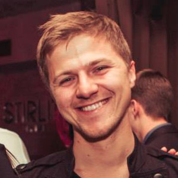

В 2018г. CEO PandaDoc Mikita Mikado объявил о инициативе в поддержку людей, которые хотят изменить свою жизнь и связать ее с миром IT, именно это и дало старт дальнейшему движению #войтивайти. Инициатива была начата в Республике Беларусь,
где медиана заработной платы составляет 400$. Основной идеей проекта является коллаборация между ментором и студентом. Ментор материально поддерживает студента, оплачивая его обучение на курсах, в свою очередь, студент обязуется помочь
материально другим людям, которые хотят #войтивайти в случаи своего успеха.
